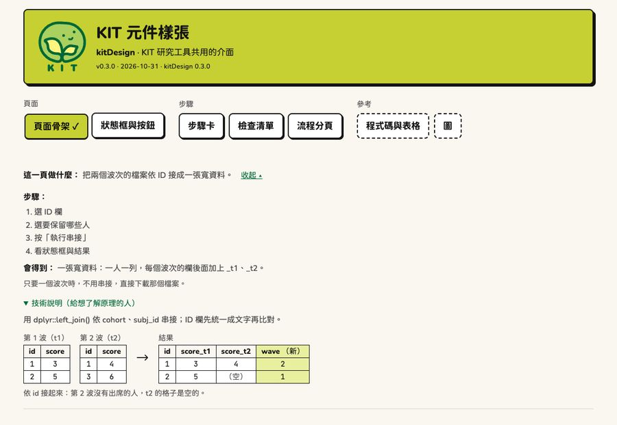
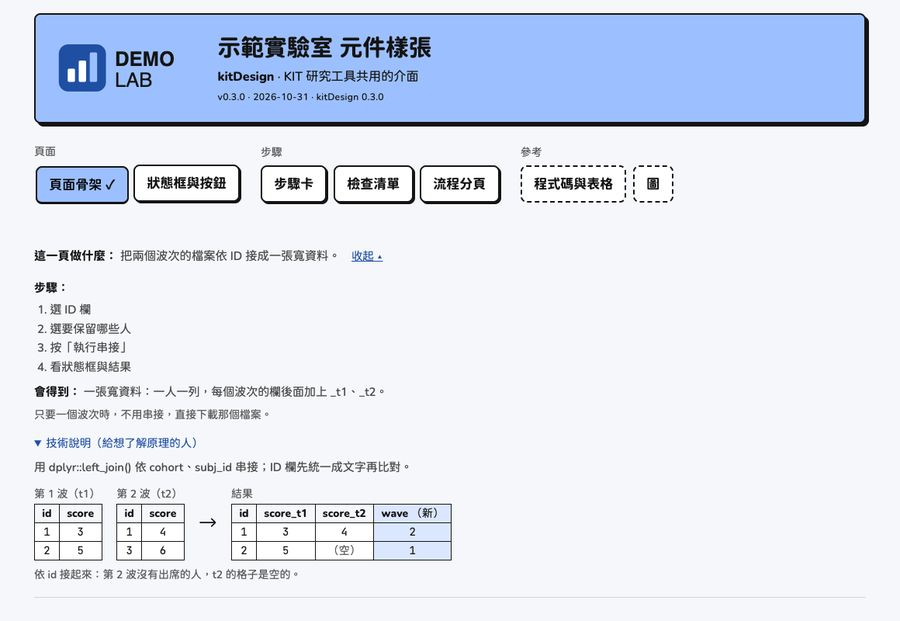
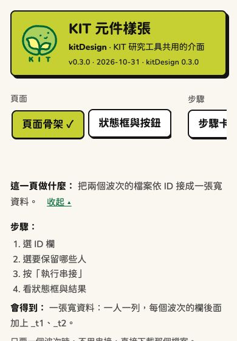

kitDesign 預設是 KIT 的樣子：萊姆色的頁首、KIT 綠的連結、豆子標誌。別的計畫或研究室要用時， 只換標誌與顏色；字型、框、陰影、元件、文案規則照設計語言。 （kitDesign 0.3.0 起）
KIT 與示範品牌
上面是 KIT，下面是藍色系的示範品牌：


手機（390px 寬）：


在自己的電腦上看：kit_gallery(brand = "demo")。
設定一次，整個 app 都用
在 app 開始時（例如 app.R 的最上面，或
run_app() 裡）：
options(kitDesign.brand = kit_brand(
"示範實驗室",
logo = "logo.svg", # 頁首的標誌：SVG 或 PNG
mark = "mark.svg", # 瀏覽器分頁的小圖示（方形）；沒有給時用 logo
colors = list(accent = "#9cc0ff", primary = "#1f4fa3", page = "#f5f7fa")
))之後
kit_page()、kit_header()、kit_theme()、kit_colors()、kit_chart_sequential()、
kit_plotly_style()
都用這個品牌。只給一頁時：kit_page(..., brand = kit_brand(...))。
kit_brand() 不給參數就是
KIT，畫出來的頁面和以前一模一樣。
kit_brand("示範實驗室", colors = list(accent = "#9cc0ff", primary = "#1f4fa3"))
#> <kit_brand> 示範實驗室
#> logo: none (alt: 示範實驗室 標誌)
#> mark: none
#> colors (* = not KIT):
#> ink #141414
#> page #faf7f0
#> card #ffffff
#> accent #9cc0ff *
#> accent_light #d4e2ff *
#> primary #1f4fa3 *
#> primary_hover #1f3b77 *
#> success #b9f0a8
#> warning #ffde59
#> danger #ff9b8f
#> info #a8dcff可以換的顏色
| 名稱 | CSS 變數 | KIT | 用在 |
|---|---|---|---|
accent |
--nb-lime |
#c6d033 |
主角色塊：頁首、主要按鈕、目前的分頁 |
accent_light |
--nb-bg-new |
#e8f0a0 |
淡的主角色：圖解裡新加的欄、色階的淡端 |
primary |
--nb-green |
#006835 |
連結、勾選框、進度條、色階的深端 |
primary_hover |
--nb-green-hover |
#004d27 |
連結滑過 |
ink |
--nb-ink |
#141414 |
文字、框、陰影 |
page |
--nb-page |
#faf7f0 |
整頁背景 |
card |
--nb-card |
#ffffff |
卡片、輸入框、表格 |
success |
--nb-mint |
#b9f0a8 |
【完成】 |
warning |
--nb-yellow |
#ffde59 |
【完成，但請注意】 |
danger |
--nb-salmon |
#ff9b8f |
【停下來】、危險按鈕 |
info |
--nb-sky |
#a8dcff |
資訊提示框 |
- 通常只要換
accent與primary。只給accent時，accent_light自動算；只給primary時，primary_hover自動算。 - 寫錯名稱會停下來，列出可以用的名稱。
- 色塊上的字一律是
ink：accent與四個狀態色上面放ink要夠清楚（對比至少 4.5:1）；primary是連結的字，在page上也要 4.5:1。 - 四個狀態色最好不換；換的話，意思不能變（完成、要注意、停下來、資訊）。
- 灰色、焦點框、圖的類別色（Okabe–Ito，色盲友善）不跟著換。
標誌
-
logo：頁首的完整標誌，高度固定（電腦 5.6rem、手機 3.6rem），寬度跟著比例。 -
mark：瀏覽器分頁的小圖示，方形，SVG 最清楚。 - 檔案在
kit_brand()時讀進來；在 Shiny 裡由一個只有這兩個檔的 dependency 提供 （不會公開檔案所在的資料夾）。不用 Shiny 的單一 HTML 檔用kit_header(logo = "inline")。 - 替代文字預設是「<名稱> 標誌」，用
logo_alt =改。沒有標誌：logo = FALSE。
圖的色階
熱圖的色階跟著品牌：極淡的 accent_light →
accent_light → primary。
kit_chart_sequential(kit_brand("示範", colors = list(accent = "#9cc0ff", primary = "#1f4fa3")))
#> [[1]]
#> [[1]][[1]]
#> [1] 0
#>
#> [[1]][[2]]
#> [1] "#EBF1FF"
#>
#>
#> [[2]]
#> [[2]][[1]]
#> [1] 0.2
#>
#> [[2]][[2]]
#> [1] "#D4E2FF"
#>
#>
#> [[3]]
#> [[3]][[1]]
#> [1] 0.4
#>
#> [[3]][[2]]
#> [1] "#ABBAE7"
#>
#>
#> [[4]]
#> [[4]][[1]]
#> [1] 0.6
#>
#> [[4]][[2]]
#> [1] "#8394D0"
#>
#>
#> [[5]]
#> [[5]][[1]]
#> [1] 0.8
#>
#> [[5]][[2]]
#> [1] "#5770B9"
#>
#>
#> [[6]]
#> [[6]][[1]]
#> [1] 1
#>
#> [[6]][[2]]
#> [1] "#1F4FA3"